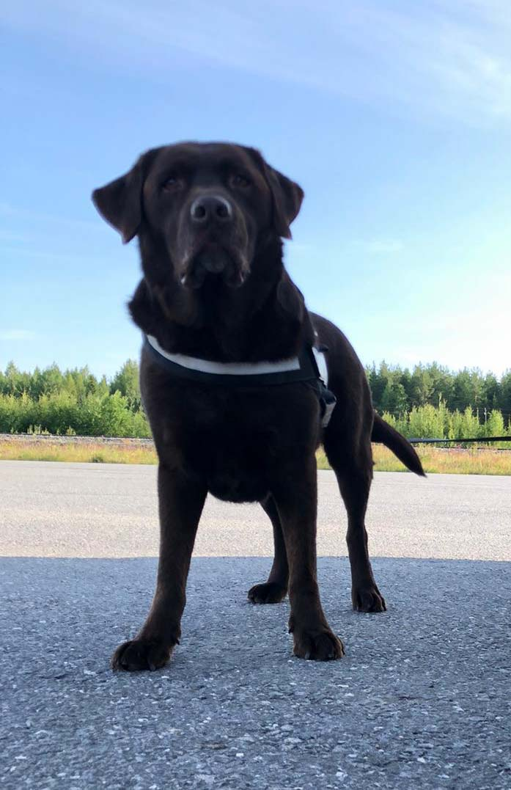

A field guide for curious people
Go where the road gets quiet.
Northbound is a slow travel journal about wild coastlines, generous tables, and the small details that make a place stay with you.
Read the latestThe weekend dispatch
Notes from the edge of the map.
Every other Friday, we send one thoughtful story, one beautiful place, and a reason to take the long way home.
Join the dispatch
Start exploring
Three ways in.
My dogs
Meet Teppo, Sancho and Nala.
Every good route needs a trusted companion. These three keep our days outside, our walks longer, and our stories warmer.


A little orientation
Choose your next kind of day.
Use this quick guide when you know you need to get away, but not quite where to begin.
| Journey mood | Go here | Best for | Start with |
|---|---|---|---|
| Wide open | The coast | Fresh air and long walks | Find a shoreline → |
| Deep green | The wild | Quiet trails and reset days | Follow the trees → |
| Full of life | The city | Good food and new streets | Read the dispatches → |